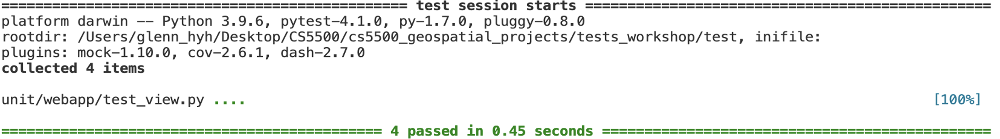
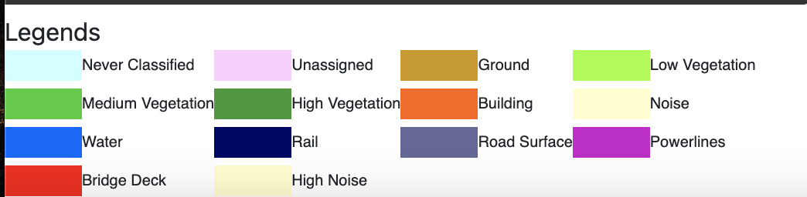

Project Update - Week 10
Sprint 9
This page summarizes the group activities and project progress in Week 10 (December 4 - December 10)
Sprint 2 Tasks
- Yuhao Hua
- Test file upload function
- Test visualization function
- Test stop visualization function
- Work on poster and slides preparation
- Peinan Wang
- Update RGB values in the legend box
- Work on poster and slides preparation
- Luocheng Zhu
- Work on login and logout functions
- Work on poster and slides preparation
Progress
We are about to wrap up our project. All three buttons are tested. The final frontend update is the legend box. Now the color in the legend matches the 2D visualization image. Other frontend features, such as login/logout and progress bar, remain unfinished.
 We have finished our poster and demo video